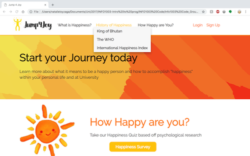
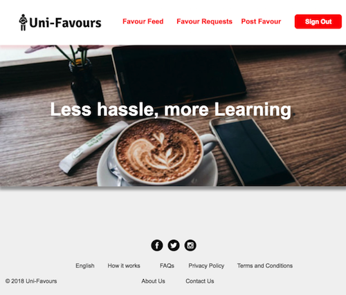
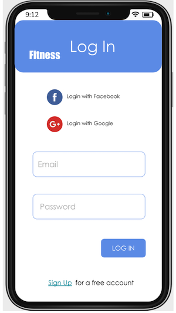

Health & Wellbeing Website
University course work major project to develop a "Health and Wellbeing" website. Implemented using HTML, CSS and javascript. Functionalities include: enquiry form data collection, user registration and login and general display of information pages.
E-Commerce Website
University course work development of an eCommerce based website using Axure RP for wireframing and prototyping. Work also focused on various project management styles and approaches.
UI/prototyping for Fitness App
University coursework to understand and evaluate human computer interactions for a Fitness app. This involves analysing various interface designs and evaluating their appropriate use, defining user goals and develop prototypes for the app. Tools used - Balsamiq and Powerpoint.
Assets Management Database
University project to develop assets management database for an organisation. Implemented in Postgres/SQL, functionalities include assigning permissions for different level of users (eg: manager vs general staff), allocation of assets (hardware devices) to users, user account creation and password management, assign devices for repairs and general reporting functions.